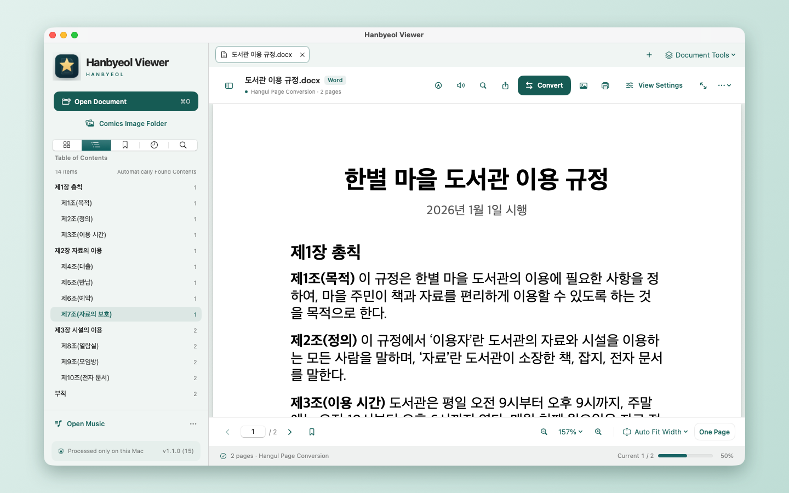
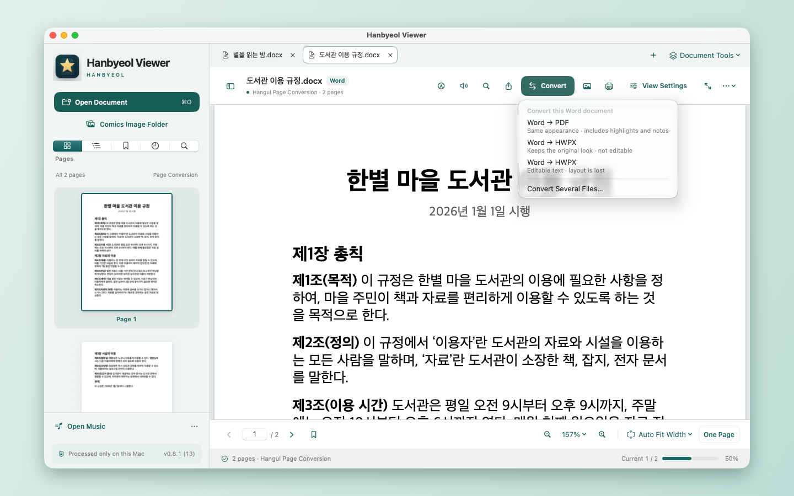
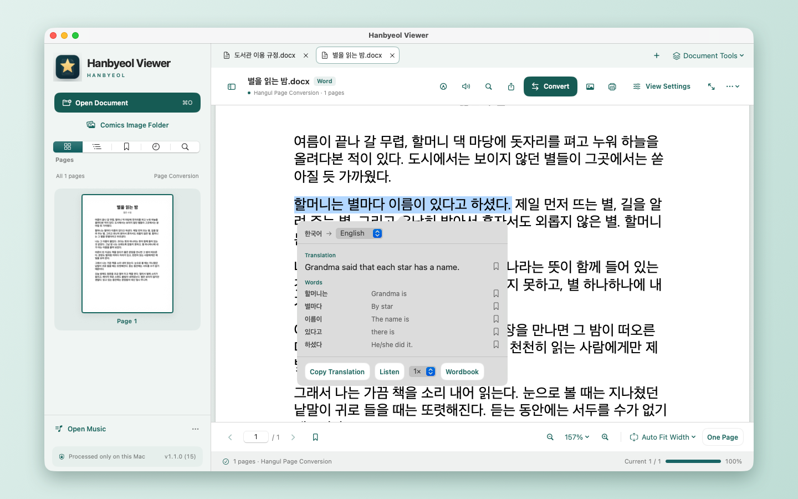

HWP viewer for Mac:
open HWP and HWPX files
Received a Korean .hwp or .hwpx file you can't open on your Mac? Hanbyeol Viewer opens it without Hancom Office, converts it to PDF, reads it aloud and translates it on the spot.
Get it free on the Mac App StoreFree · No ads · No account · macOS 14 or later (Apple silicon)

Open HWP and HWPX files on macOS
HWP and HWPX are the file formats of the Korean word processor Hangul. Hanbyeol Viewer opens both, along with PDF and Word files.
- Opens HWP, HWPX, PDF and Word (DOCX, DOC, RTF)
- Fit width, full page, two-page view, and a text-only reading mode
- Table of contents (built from headings when the file has none), bookmarks and search
- Highlights, underlines and notes
Convert HWP to PDF on your Mac
No upload to a conversion website. Files are converted on your Mac, so work documents and personal papers stay with you.
- HWP and HWPX to PDF
- PDF to HWPX, and save as Word (DOCX)
- Convert many files at once
- Extract pages and merge PDFs

Listen, translate and collect words
Have a document read aloud, or select a sentence to see its translation. Speech and translation both run on your Mac.
- Read aloud with 10 voices and adjustable speed (tuned for Korean)
- Sleep timer
- Select text to translate it and save words to a wordbook (macOS 15 or later)
- Review cards and export for Anki

Questions
How do I open an HWP file on a Mac?
Get Hanbyeol Viewer from the Mac App Store, then right-click the HWP file in Finder and choose Open With → Hanbyeol Viewer. You do not need Hancom Office.
Can I edit an HWP file?
No. Hanbyeol Viewer is a reader and has no editing. If you need to change the text, save the document as Word (DOCX) and edit it in another app; only the text is kept, without tables and layout.
Is it free?
Yes. There are no ads and no account.
Which files cannot be opened?
Password-protected, DRM-locked or distribution-locked HWP documents.
Is there an iPhone or iPad version?
Not at the moment. The app is for Mac only.